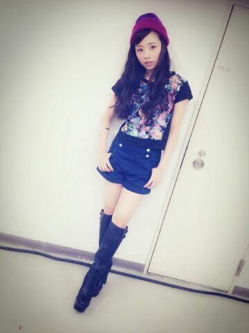
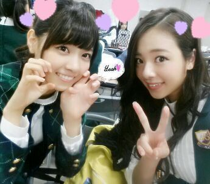
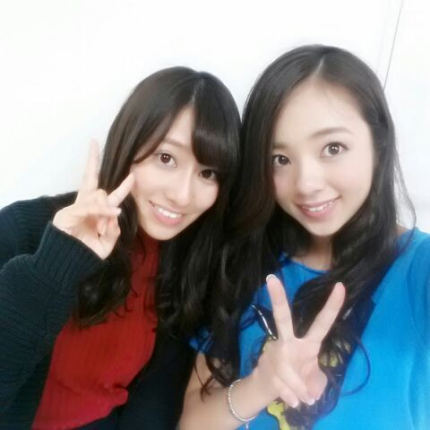

| 2014/09 30 Tue | 今日はゆうりとお靴をゴシゴシし たよ(*^.^*) まひろ |
こんにちわ..* 乃木坂46 Rottyです
この 土.日は 幕張で握手会でした.///
これは こないだの個握の私服です..*

また大好きなニット帽をかぶちゃった。。。
今日は朝から ゆうりん家のベランダで靴を洗ったよ!!!
前から靴洗うとき一緒に洗お〜って約束してたから、やっと洗えて嬉しい..*
楽屋で七瀬と〜*..*..*

アンダーlive終わったら 七瀬とご飯行こおーっと.♪.♪
あと、全握のペアは れいかとでした〜\(#^.^#)/

れいか推しの方たちと Rotty夢の方たち、来てくれた皆、本当にありがとう

本当に楽しかったです...*
れいかが終わってから「Rotty夢は優しい人ばっかだね...*やっぱファンは似るね.♪」って言ってくれて、
「ん？ それってまひろが優しい人って思ってくれてるの？」って聞いたら
「ん〜 そういうことかな^^」って言われたよ(*´∇｀*)
嬉しゅうキモチやね.♪.♪
まひろも れいか推しの皆は愛があるな〜..*って思ったよ！
ではでは またblog更新しますね！のし..*
コメント(261)
2014/09/30 20:06